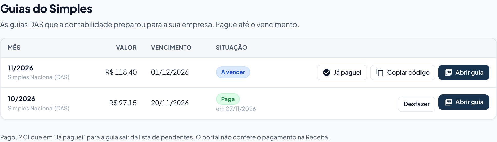

Guias do Simples: pagar o DAS do mês
A contabilidade prepara a guia DAS da sua empresa e ela aparece aqui. Abra, pague até o vencimento e marque como paga.
lightbulb Antes de começar
- Quando uma guia nova chega, todas as pessoas da empresa no portal recebem um e-mail de aviso.
- O pagamento é feito no banco (aplicativo, internet banking ou lotérica), como um boleto. O portal não faz pagamento.
-
Abra as Guias do Simples
No menu, clique em Guias do Simples. Cada linha é um mês, com valor, vencimento e situação.

-
Pague a guia
Escolha um jeito:
- Abrir guia: abre o PDF para imprimir ou ler o código no aplicativo do banco.
- Copiar código: copia o código de barras. Cole no aplicativo do banco, em "pagar boleto" ou "pagar conta".
-
Marque como paga
Depois de pagar, clique em Já paguei. A guia passa para Paga, com a data. Marcou sem querer? Clique em Desfazer.
O portal não confere o pagamento na Receita. Guarde o comprovante do banco.
O que cada situação quer dizer
| Situação | O que significa |
|---|---|
| A vencer | Ainda dá tempo de pagar sem multa. |
| Vence hoje | Último dia para pagar sem multa. |
| Venceu | Passou do vencimento. Fale com a contabilidade: a guia precisa ser refeita com multa e juros. |
| Paga | Alguém da empresa ou da contabilidade marcou como paga, na data mostrada. |
Se der errado
| O que aconteceu | O que fazer |
|---|---|
| A guia do mês não apareceu. | A contabilidade ainda não anexou. Ela costuma sair depois do dia 1º do mês seguinte. |
| O banco não aceita o código. | Use Abrir guia e leia o código de barras do PDF com a câmera do aplicativo do banco. |
| O valor parece errado. | Fale com a contabilidade antes de pagar. Ela pode trocar a guia. |
← Voltar para a Central de Ajuda
Última revisão: 08/11/2026